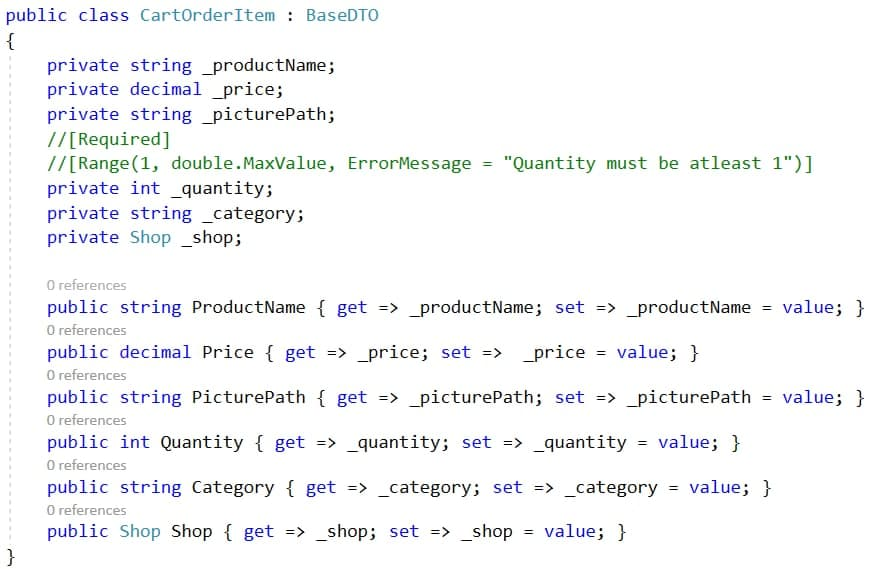
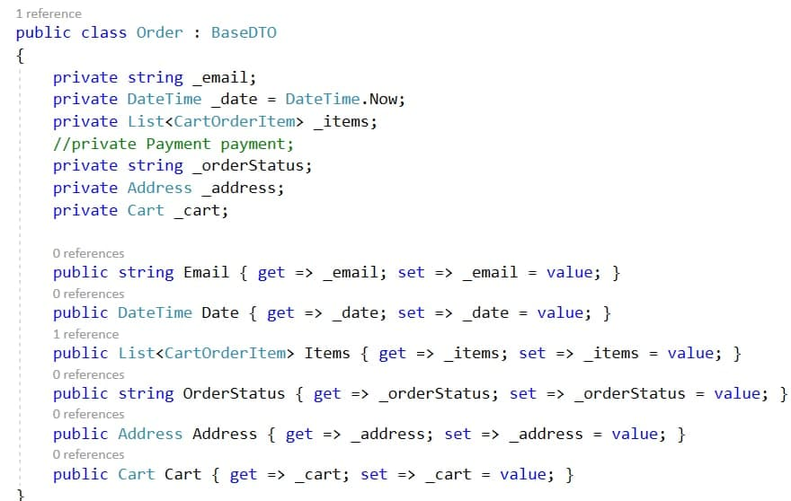
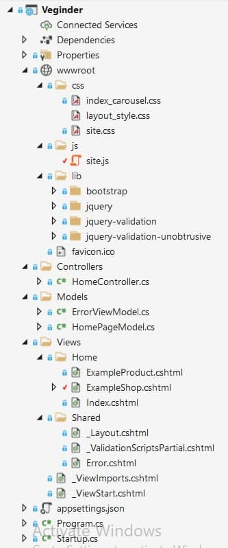
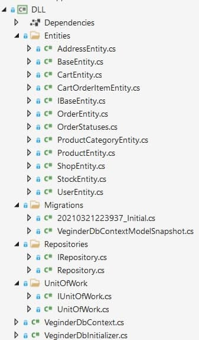
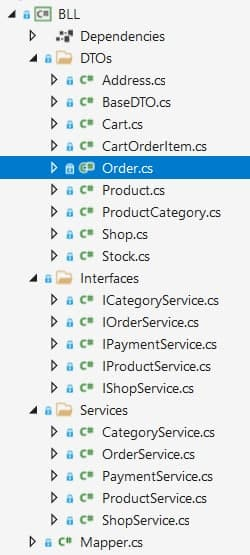
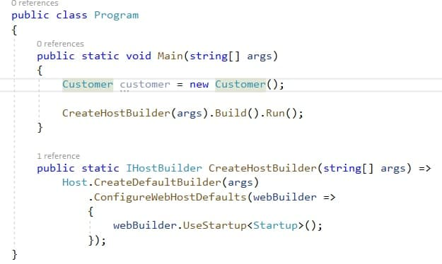
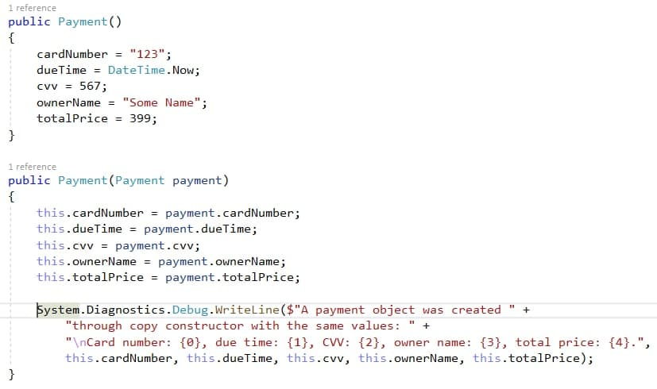
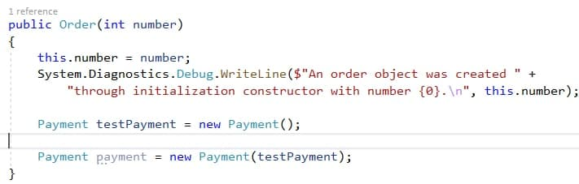

Тема: ВИКОРИСТАННЯ ВЛАСТИВОСТЕЙ. АВТОМАТИЧНІ ВЛАСТИВОСТІ. СКОРОЧЕНИЙ ЗАПИС ВЛАСТИВОСТЕЙ
Мета: Здійснити введення та виведення даних закритих полів класів, застосовуючі методи-властивості.
Постановка задачі:
1. Доповнити програмну реалізацію класів методами-властивостями класів, введення та виведення даних закритих полів класів
2. Протестувати програму, шляхом запуску програми, введенням та виведенням значень закритих полів.
Середовище розробки: Visual Studio
Класи, у яких використовуются властивості для закритих полів
CartOrderClass
OrderClass
Загальна структура
Структура шару даних
Структура бізнес шару
Клас Program
Конструктори
 Проект розміщенно на GitHub
ПосиланняУ ході виконанная даної лабораторної роботи навчились використовувати властивості та застосовувати скорочений запис властивостей.
Також здійнснили введення та виведення даних закритих полів класів, застосовуючи методи-властивості.
Доповнили програмну реалізацію класів методами-властивостями класів, введення та виведення даних закритих полів класів. Протестували програму, шляхом запуску програми, введенням та виведенням значень закритих полів.